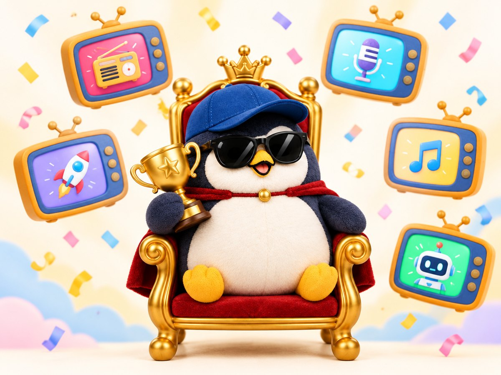

The YouTubers I love in 2026 🏆

What I like on YouTube changes every year.
So for now, I will introduce the YouTubers I picked in 2026.
Overall, my most favorite entertainment content is Kaigai Y Papa.
This person is the top of the top this year.
I like this person so much that I watch all of the videos.
The Daily Show is probably famous in America, since it has 14 million subscribers.
Even for me, a Japanese person, they are really, really funny.
There are many American jokes, but it is very funny.
To be honest, the English is hard too, because it is American English and very fast.
I do not know what they are saying, but the mood alone is funny.
They criticize American politics in a way that would be impossible in Japan.
Japanese people also criticize the Japanese government, but this media is on another level.
The way they criticize President Trump is full of humor and very cheeky.
It is a classic, but I also like MrBeast. MrBeast is No. 2.
His English is easy to hear, and even if you do not understand English, you can kind of understand from the visuals alone.
When I watch MrBeast, my heart calms down a little, and I can think the world is big.
When I stay inside Japan, my view gets very narrow, and MrBeast widens it a little. I really love that.
For AI, the source I trust very much this year is the videos of "Maji AI."
For music on YouTube, I quite like Mrs. GREEN APPLE's live videos.
For some reason, I do not really like their music videos, on an instinct level.
When I watch them, I feel a little embarrassed myself. I am really sorry.
Of course, the music videos for "Lilac" and "Que Sera Sera" move me, and recently "Cinderella" moved me too.
But their music is so good that, to be honest, the music video becomes a little noise.
So I like listening to Omori's beautiful singing voice in live videos more. 🎶